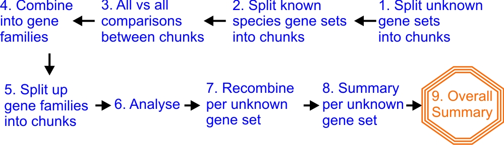

A more ambitious real-world example¶
Understanding newly discovered genes¶
This is the sort of problem that motivated the design of the ruffus module.
Background:¶
We have been asked to understand the function of some newly discovered genes:
With a bit of luck, someone, somewhere has previous investigated the corresponding genes in e.g. the fly or octopus. This would save us a lot of work.
So, first we have to find the corresponding genes (homologs) in different species.
Comparisons within each gene family of corresponding genes can be very useful too:
We can see how similar parts of each gene have been evolving. Crucial active sites in enzymes can stay unchanged for hundreds of millions of years. Other parts can change very rapidly because we are in an arms race with parasites, viruses and the like...
Aim:¶
We need to:
- Find all genes related to our unknown genes in different species.
- create family trees for each sets of related genes
- Line up corresponding parts of each gene
- Analyse their evolution.
Luckily, there are standard tools to do all this!!
These are computationally intensive but embarassingly parallel tasks. We just have to break them up into digestible pieces running in parallel on our cheap computational clusters.
This is where ruffus can come in.
Conceptual Flow chart:¶
Our pipeline has 5 easy conceptual steps:
- Compare all the unknown gene sets with all genes from each species
- Put together gene families from relationships involve all the species
- Analyse the evolution of each gene family
- Summarise per (previously) unknown gene set
- Produce overall summary

This is a simple list of sequential tasks which are conceptually easy (for genome scientists!) to grasp, and should be straightforward to code using ruffus.
Flow chart of file dependencies:¶
There are two reasons why this pipeline is more complicated than it seems:
Large files have to be broken up into small chunks and parcelled out to run in parallel.
The results then have to be recombined into a single file.
An all vs. all comparison is involved
This complexity is obvious in even this simplified flowchart:

These operations are particularly horrible to describe using gmake or scons which rely on file dependency trees:
Each line in step (3) is an operation between two different files.gmake or scons much prefer that we know up front how many files are involved in the pipeline.
In this and similar cases, we can’t know in advance of running the pipeline how many small chunks will be produced. It depends on the size of gene sets and the size of the calculated gene families.
To code this in gmake or scons require either recursive calls, splitting up the pipeline, or horrible hacks to the internals of each tool.
Ruffus Flow chart¶
Our pipeline flow chart is built around these 9 steps:

- Split up the unknown gene sets into smaller chunks
- Likewise split up the sets of known gene sets from each species
- Run each unknown chunk against all the known chunks (all-vs-all comparisons)
- Combine chunk comparisons into gene families
- Split up gene families into bite-sizes
- Analyse evolutionary parameters
- Recombine results per unknown gene set
- Summary per unknown gene set
- Overall summary
Extra tasks 1, 2, 4, 5 and 7 involve splitting up the work for parallel jobs, or re-combining them afterwards.
Let us go through the more involved of these steps.
The full code is available here.
1. Split up unknown gene sets¶
We first split up the unknown gene sets into smaller chunks for parallel processing.
We make sure the working directory is created using:
@follows(mkdir(...))The files can then be created as follows:
unknown_genes/XXX.genes.fa -> XXX/split_gene_sets.completed XXX/NNN.fawhere XXX is the name of the unknown gene set, and NNN.fa represent successively numbered files, e.g. 1.fa, 2.fa and so on.
Since we don’t known how many file chunks will be produced, each job creates a single flag file (split_gene_sets.completed) to indicate it has run successfully.
The python code will look this this:
unknown_gene_sets = data_dir + "/unknown_genes/*.genes.fa" @follows(mkdir(working_dir)) @files_re(unknown_gene_sets, r"(.*/)(.*)(.genes.fa)", # regular expression r"\1\2\3", # starting_gene_set working_dir + r"/\2/split_gene_sets.completed", # job_completion_flag working_dir + r"/\2") # output_dir def split_unknown_gene_set( starting_gene_set, job_completion_flag, split_output_dir): make_directory_for_chunks() split_unknown_genes_sets_into_chunks() touch_completion_flag_file()
2. Split up known gene sets for each species¶
Do likewise with the known gene sets from each of the species we are comparing against.
The files are created as follows:
all_genes_in_each_species/YYY.genes.fa -> species_YYY/split_gene_sets.completed -> species_YYY/MMM.fawhere YYY is a species name e.g. fly or octopus, and MMM.fa represent successively numbered files
3. All vs. all comparisons¶
Now we need to compare all the chunks in each species against all the chunks in each unknown gene set:
for x in XXX: for n in NNN: for y in YYY: for m in MMM: x/n.fa vs. species_y/m.fa -> compare/x/y.n.m.comparison_res -> compare/x/y.n.m.complete
- where
XXX is the name of the unknown gene set,
YYY is the species name e.g. fly or octopus,
NNN and MMM represent successively numbered files
We also use a completion flag file (compare/x/y.n.m.complete) because if no related genes (homologs) are found between the chunk of unknown genes and the chunk of species genes, no output will be produced. The completion flag is the only way we will know that the job completed properly.
These all vs all comparisons are easy to set up with a custom python function. The most important part of the code involves the two sets of nested for loops:
def generate_all_vs_all_params (): species_names = get_species_names() gene_set_names = get_unknown_gene_set_names() # # Nested for loops (1): # # each species vs each unknown gene set # for x in gene_set_names: for y in species_names: m_files = glob.glob("%s/%s/*.fa" % (w_dir, x)) n_files = glob.glob("%s/%s/*.fa" % (w_dir, y)) # # Nested for loops (2): # # each species chunk vs for each unknown chunk # for m_file in m_files: for n_file in n_files: input_files = [m_file, n_file] yield input_files # more code removed ...
4. Combine chunk comparisons into gene families¶
7. Recombine results per unknown gene set¶
Steps (4) and (7) involve gathering many files and merging them together in one output file. The best way to do this again involves generating the job parameters on the fly.
This turns out to be a really easy function to write. We just need to specify all the input files from a glob:
def generate_params_for_making_gene_families (): for x in get_unknown_gene_set_names(): results_files = glob.glob("compare/%s/*.comparison_res" % x) family_file = "multiple_alignment/%s/gene.families" % x yield results_files, family_file
5. Split up gene families lists¶
The uses the same approach as steps (1) and (2)
6. Analyse evolutionary parameters¶
8. Summary per unknown gene set¶
Steps (6) and (8) turned out to be the easiest parts of the entire pipeline: Generating files of one type from another with two suffices involves the simplest of regular expressions:
@files_re("multiple_alignment/*/*.aln", r"aln$", r"evo_res") def evolution_analysis( family_file, result_file_name): " ... "
9. Overall summary¶
We simple supplied a list of the separate summary files to the @files decorator to generate the final conclusions of this pipline. Couldn’t be simpler.
Conclusions¶
This may seem a long-winded example but without ruffus to help abstract away some of the complexity, the code would have been quite unmanageable.